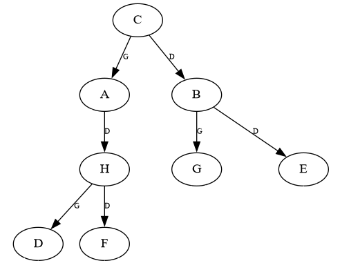

Implémentation d'un arbre binaire
Il y a de nombreuses manières d'implémenter un arbre binaire.
Dans cette partie, on proposera une manière parmi d'autres d'implémenter cette structure de données. Pour vous entraîner sur d'autres implémentations, voir la partie exercices.
En langage Python, on ne peut pas avoir plusieurs constructeurs dans une classe.
On aura donc un seul constucteur pouvant être appelé de deux façons différentes :
Arbre(): création d'un arbre binaire vide, les attributsracine,gaucheetdroiteseront automatiquement affectés àNone.Arbre(racine, gauche, droite): création d'un arbre binaire non vide, dont laracineest la valeur (l'étiquette) du noeud racine, etgaucheetdroitesont également de typeArbre.
Note : Une feuille est donc une instance de Arbre dont le sous-arbre gauche et le sous-arbre droit sont des arbres vides.
À télécharger
Récupérez les fichiers suivants :
- arbre_binaire.py - Classe
Arbreà compléter représentant un arbre binaire. - dessin.py - Quelques fonctions annexes utilisées pour dessiner un arbre avec le module
Graphviz. (Vous n'avez pas besoin d'ouvrir ou de modifier ce fichier.)
Si vous utilisez les machines du lycée:
- windows_graphviz.zip - Décompressez l'archive dans le répertoire où se trouvent vos fichiers Python. Vous devez avoir
arbre_binaire.py,dessin.pyet un dossierGraphvizau même endroit.
Contient les exécutables de Graphviz.
Installation de Graphviz sur votre machine personnelle
Pour utiliser la fonction dessiner, le module Graphviz et les exécutables associés doivent être installés sur votre machine. Voici comment procéder.
Étape 1 - Installer le module Graphviz
Méthode 1 :
Dans Thonny, allez dans l'onglet "Outils", puis "Gérer les paquets". Recherchez "graphviz", puis cliquez sur le bouton Installer.
Méthode 2 :
Ouvrez l'invite de commande Windows (ou le terminal si vous utilisez Linux), puis exécutez simplement la commande suivante :
Étape 2 - Installer les exécutables
Si vous êtes sur Windows, cliquez ici puis téléchargez et installez la dernière version de Graphviz (choisissez l'EXE Installer correspondant à la version de votre système d'exploitation, 32 bits ou 64 bits. Si vous avez un doute, choisissez la version 32 bits ou lisez cet article pour connaître la version de votre système.)
Si vous êtes sur Linux, cliquez ici puis installez le paquet graphviz en exécutant dans le terminal la commande associée à votre distribution (Ubuntu, Fedora, etc.).
Si vous êtes sur macOS, cliquez ici puis exécutez l'une des commandes indiquées.
Méthodes de la classe
Intéressons-nous d'abord aux méthodes de notre classe, de manière à définir les opérations de base pouvant être effectuées sur notre arbre.
''' Classe implémentant un Arbre Binaire. '''
class Arbre:
def __init__(self, valeur=None, gauche=None, droite=None):
''' Crée un nouvel arbre binaire.
:param valeur: (int|str) La valeur du noeud racine, soit un entier, soit une chaîne de caractères
:param gauche: (Arbre) Le sous-arbre binaire gauche (None pour arbre binaire vide)
:param droite: (Arbre) Le sous-arbre binaire droit (None pour arbre binaire vide)
:CU: Si valeur est à None, gauche et droite doivent être également à None (cas de l'arbre vide),
sinon, gauche et droite doivent être de type Arbre. '''
assert (valeur == None and gauche == None and droite == None) or \
(type(valeur) in (int, str) and type(gauche) == Arbre and type(droite) == Arbre)
self.v = valeur
self.g = gauche
self.d = droite
def est_vide(self):
''' Renvoie True si l'arbre binaire est vide, False s'il ne l'est pas. '''
pass
def racine(self):
''' Renvoie le Noeud racine de l'arbre binaire.
:CU: L'arbre n'est PAS vide '''
pass
def valeur_racine(self):
''' Renvoie la valeur de la racine de l'arbre binaire.
:CU: L'arbre n'est PAS vide'''
pass
def gauche(self):
''' Renvoie le sous-arbre gauche de l'arbre binaire.
:CU: L'arbre n'est PAS vide'''
pass
def droite(self):
''' Renvoie le sous-arbre droit de l'arbre binaire.
:CU: L'arbre n'est PAS vide'''
pass
def est_feuille(self):
''' Renvoie True si l'arbre binaire est une feuille, False s'il ne l'est pas.
:CU: L'arbre n'est PAS vide'''
pass
Important
Dans cette implémentation, on n'utilise pas de classe Noeud pour représenter les noeuds de l'arbre (ce qui diffère du type abstrait). On considère que le noeud racine d'un arbre est l'arbre lui-même. La méthode nommée racine renverra donc simplement l'adresse de l'instance de la classe Arbre.
À faire
Complétez le corps de chaque méthode de la classe Arbre.
Solution
''' Classe implémentant un Arbre Binaire. '''
class Arbre:
def __init__(self, valeur=None, gauche=None, droite=None):
''' Crée un nouvel arbre binaire.
:param valeur: (int|str) La valeur du noeud racine, soit un entier, soit une chaîne de caractères
:param gauche: (Arbre) Le sous-arbre binaire gauche (None pour arbre binaire vide)
:param droite: (Arbre) Le sous-arbre binaire droit (None pour arbre binaire vide)
:CU: Si valeur est à None, gauche et droite doivent être également à None (cas de l'arbre vide),
sinon, gauche et droite doivent être de type Arbre. '''
assert (valeur == None and gauche == None and droite == None) or \
(type(valeur) in (int, str) and type(gauche) == Arbre and type(droite) == Arbre)
self.v = valeur
self.g = gauche
self.d = droite
def est_vide(self):
''' Renvoie True si l'arbre binaire est vide, False s'il ne l'est pas. '''
return self.v == None
def racine(self):
''' Renvoie le Noeud racine de l'arbre binaire.
:CU: L'arbre n'est PAS vide '''
return self
def valeur_racine(self):
''' Renvoie la valeur de la racine de l'arbre binaire.
:CU: L'arbre n'est PAS vide'''
return self.v
def gauche(self):
''' Renvoie le sous-arbre gauche de l'arbre binaire.
:CU: L'arbre n'est PAS vide'''
return self.g
def droite(self):
''' Renvoie le sous-arbre droit de l'arbre binaire.
:CU: L'arbre n'est PAS vide'''
return self.d
def est_feuille(self):
''' Renvoie True si l'arbre binaire est une feuille, False s'il ne l'est pas.
:CU: L'arbre n'est PAS vide'''
return self.gauche().est_vide() and self.droite().est_vide()
Création d'un nouvel arbre
Essayons de créer l'arbre suivant en utilisant notre classe Arbre :

Note
L'affichage avec Graphviz ne permettant pas toujours de bien distinguer visuellement les sous-arbres gauches des sous-arbres droits, on a ajouté l'information G ou D sur chaque arête, indiquant respectivement qu'il s'agit du sous-arbre gauche ou du sous-arbre droit.
Voici une instruction permettant de créer cet arbre à l'aide de notre classe Arbre et de le stocker dans une variable a :
ab = Arbre('C',
Arbre('A',
Arbre(),
Arbre('H',
Arbre('D', Arbre(), Arbre()),
Arbre('F', Arbre(), Arbre())
)
),
Arbre('B',
Arbre('G', Arbre(), Arbre()),
Arbre('E', Arbre(), Arbre())
)
)
Bien sûr, on aurait pu l'écrire sur une seule ligne :
ab = Arbre('C', Arbre('A', Arbre(), Arbre('H', Arbre('D', Arbre(), Arbre()), Arbre('F', Arbre(), Arbre()))), Arbre('B', Arbre('G', Arbre(), Arbre()), Arbre('E', Arbre(), Arbre())))
On aurait également pu créer plusieurs variables de manière à décomposer l'arbre :
# Création des feuilles
fd = Arbre('D', Arbre(), Arbre())
ff = Arbre('F', Arbre(), Arbre())
fg = Arbre('G', Arbre(), Arbre())
fe = Arbre('E', Arbre(), Arbre())
# Création des sous-arbres
sah = Arbre('H', fd, ff)
sab = Arbre('B', fg, fe)
saa = Arbre('A', Arbre(), sah)
# Création de l'arbre final
ab = Arbre('C', saa, sab)
Enfin, pour dessiner cet arbre, on peut utiliser la fonction dessiner importée depuis dessin.py :
Si l'on souhaite accéder par exemple au noeud ayant pour valeur B, qui est équivalent à l'arbre dont valeur_racine() == 'B', on utilisera l'instruction :
et si on veut récupérer la valeur de ce noeud :
À faire
Comment récupérer la feuille ayant pour valeur D ?
Solution
ou simplementet pour récupérer la valeur qu'elle contient :
Quelques mesures sur les arbres
Important
Pour les mesures suivantes, on considèrera que la profondeur du noeud racine est de 0. Ainsi, on considèrera que la hauteur de l'arbre vide est de -1. Il s'agit d'un choix arbitraire, on aurait très bien pu choisir une profondeur de 1 pour le noeud racine (auquel cas l'arbre vide serait de hauteur 0).
On rappelle que pour écrire des fonctions de manière récursive, vous devez toujours distinguer :
- au moins un cas de base (condition d'arrêt), qui ici peut être par exemple le cas où l'arbre est vide ou encore le cas où l'arbre est une feuille. Un cas de base est un cas non récursif, pour lequel la valeur renvoyée par la fonction est directement définie.
- au moins un cas général, ou cas récursif, c'est-à-dire un cas dans lequel la fonction est appelée récursivement et où le résultat renvoyé est calculé en utilisant le résultat du (ou des) appel(s) récursif(s). À chaque appel récursif, la valeur d'au moins un des paramètres de la fonction doit changer, de manière à converger vers le cas de base.
À faire
Complétez les fonctions taille, hauteur, nb_feuilles et est_present. Ces fonctions doivent être écrites de manière récursive.
Indice pour la fonction taille
Pour écrire cette fonction, qui doit fonctionner autant sur un arbre vide que sur un arbre non vide, il convient d'abord de déterminer un cas de base, c'est-à-dire un cas non récursif de manière à ce que l'algorithme s'arrête à un moment donné.
Sur quel type d'arbres la fonction taille renverra toujours la même valeur ?
- Si l'on cherche la taille d'un arbre vide, on obtiendra toujours 0 car un arbre vide ne contient pas de noeuds. C'est donc là notre cas de base.
Ensuite, il faut détermine un cas général, c'est-à-dire un cas où l'on effectue un ou plusieurs appels récursifs à taille.
- Si l'on cherche la taille d'un arbre non vide, c'est-à-dire d'un arbre constitué d'un noeud racine, d'un sous-arbre gauche et d'un sous-arbre droit, on peut alors établir que la taille de l'arbre correspond à 1 (on compte le noeud racine) + la taille du sous-arbre gauche + la taille du sous-arbre droit.
Au fur et à mesure des appels récursifs, on convergera vers le cas où l'arbre est vide, et donc la fonction finira par se terminer.
Maintenant que l'on a déterminé ces deux cas en français, il ne reste plus qu'à les retranscrire en Python.
Indice pour la fonction hauteur
Cette fonction est assez proche de la fonction taille.
On doit pouvoir déterminer la hauteur d'un arbre vide ou non.
La profondeur du noeud racine est de 0.
- On considèrera que la hauteur d'un arbre vide est toujours de -1, ce sera donc le cas de base.
- Pour le cas général (arbre non vide), il faut compter la racine, donc ajouter 1 à la hauteur de l'arbre, puis y ajouter la plus grande hauteur entre celle du sous-arbre gauche et celle du sous-arbre droit (appels récursifs).
Note : La fonction Python max permet de déterminer la plus grande valeur entière parmi plusieurs valeurs.
Solutions
def taille(ab: Arbre) -> int:
''' Renvoie la taille d'un arbre. '''
if ab.est_vide():
return 0
else:
return 1 + taille(ab.gauche()) + taille(ab.droite())
def hauteur(ab: Arbre) -> int:
''' Renvoie la hauteur d'un arbre. '''
if ab.est_vide():
return -1
else:
return 1 + max(hauteur(ab.gauche()), hauteur(ab.droite()))
def nb_feuilles(ab: Arbre) -> int:
''' Renvoie le nombre de feuilles que contient un arbre binaire. '''
if ab.est_vide():
return 0
elif ab.est_feuille():
return 1
else:
return nb_feuilles(ab.gauche()) + nb_feuilles(ab.droite())
def est_present(ab: Arbre, el: int|str) -> bool:
''' Renvoie True si un noeud contenant l'élément el est présent dans l'arbre, False sinon. '''
if ab.est_vide():
return False
elif ab.valeur_racine() == el:
return True
else:
return est_present(ab.gauche()) or est_present(ab.droite())
Parcours d'arbres
Parcours en profondeur
On rappelle le déroulement des parcours préfixe, infixe et suffixe (ou postfixe). Dans notre implémentation, on se contentera d'afficher les noeuds visités :
Déroulement parcours préfixe
Précondition : L'arbre n'est pas vide
Le parcours_préfixe se déroule comme suit :
- On
affichele nœud racine de l'arbre. - On effectue le
parcours préfixedu sous-arbre gauche (s'il est NON vide). - On effectue le
parcours préfixedu sous-arbre droit (s'il est NON vide).
Déroulement parcours suffixe
Précondition : L'arbre n'est pas vide
Le parcours_suffixe se déroule comme suit :
- On effectue le
parcours suffixedu sous-arbre gauche (s'il est NON vide). - On effectue le
parcours suffixedu sous-arbre droit (s'il est NON vide). - On
affichele nœud racine de l'arbre.
Déroulement parcours infixe
Précondition : L'arbre n'est pas vide
Le parcours_infixe se déroule comme suit :
- On effectue le
parcours infixedu sous-arbre gauche (s'il est NON vide). - On
affichele nœud racine de l'arbre. - On effectue le
parcours infixedu sous-arbre droit (s'il est NON vide).
À faire
Implémentez les algorithmes de parcours en profondeur préfixe, infixe et postfixe de manière récursive.
Solution
À venir...
Parcours en largeur
Contrairement aux algorithmes de parcours en profondeur, on implémentera le parcours en largeur de manière itérative et non récursive.
On utilisera une structure de file pour stocker les noeuds à visiter, qu'on choisira de représenter par une liste Python. Les opérations sur cette file sont les suivantes :
file.pop(0): défiler (récupérer le premier élément de la file et le retirer de la file),file.append(element): enfiler (ajouter un élément à la fin de la file).
Voici le déroulement du parcours en largeur :
Déroulement parcours en largeur
Précondition : L'arbre n'est pas vide
Le parcours_en_largeur se déroule comme suit :
- On
créeune nouvelle file vide. - On
enfilededans le noeud racine de l'arbre (qui est, dans notre implémentation, équivalent à l'arbre lui-même). - TANT QUE la file n'est PAS vide :
- On
défilela file et on stocke le noeud récupéré dans une variable. - On
affichela valeur du noeud récupéré. - Si le sous-arbre gauche à ce noeud n'est PAS vide, on l'
enfiledans la file. - Si le sous-arbre droit à ce noeud n'est PAS vide, on l'
enfiledans la file.
- On
À faire
Implémentez l'algorithme de parcours en largeur.
Solution
À venir...